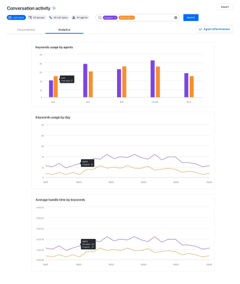

Find the moment.
Keep the context.
Exploring how searchable transcripts and audio could make call review more focused, without losing the conversation around a match.
- Work
- Product concepts through visual design
- Timeframe
- September–December 2020
- Partners
- Product, engineering & research
- Project stage
- Sales concept demo

01 / Context
A recording holds the answer.
Finding it takes work.
Reviewing calls meant finding the right recording, locating the relevant moment, and understanding what was said around it.
The concept explored searchable audio and auto-generated transcripts for supervisors and sales or marketing users. My contribution included product concepts, user stories, concept testing, low- and high-fidelity work, and visual design.
Help people move from a search result to the surrounding conversation, rather than treating a keyword match as the whole answer.
02 / The prototype
Keep the list.
Open up the conversation.
A split layout paired the call list with a transcript, so people could switch between recordings while keeping the search context visible.
Keyword positions and counts were surfaced in seek bars. A context preview let people inspect a match without opening the full transcript and recording. The concept also supported listening to one recording while viewing another transcript.

This silent original prototype plays and loops while visible. Use the controls to pause or seek. Reduced-motion preferences disable automatic playback.
Make matches locatable.
Position and count indicators connect the keyword result to a place in the recording.
Preview before committing.
A short context preview helps people decide which result merits closer review.
03 / The final demo
Let the recording continue
while the review moves on.
The final demo added a global player, keeping the current recording available while people scrolled and explored.
Matched headers clarified the relationship between the list and detail panels. Search analysis offered another way to look across the conversation data, rather than reviewing only one recording at a time.


04 / Result & learning
A useful concept.
An unresolved trust question.
The work became a sales concept demo and received positive qualitative feedback. Further progress faced company concerns about accuracy and security.
Those concerns are part of the story, not a footnote to hide. An interface can make a transcript easier to navigate without establishing that its analysis is dependable enough for a particular decision.
The supplied source describes a concept demo and qualitative feedback. It does not establish a production release, measured time savings, or proven business impact. No transcript-accuracy benchmark or resolved security assessment was supplied.
Sources and scope notes
Adapted from the original GoTo conversation intelligence sequence. Commentary about trust is present-day editorial interpretation of the source’s documented accuracy and security concerns, not a claim about a new research study.
- Contribution, team, and timeframe
- Concept-testing prototype and original GIF
- Final demo
- Result and constraints
Source links may require Figma access. Public-sharing permissions still need review.
Next case / Cattia